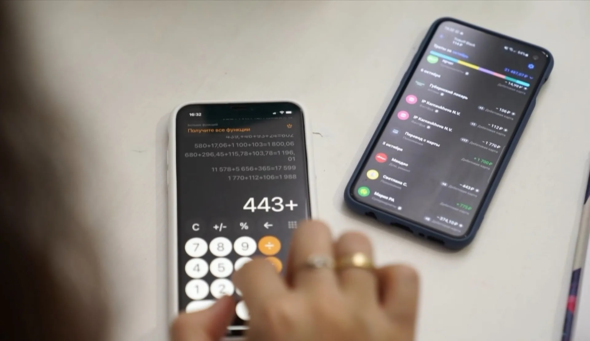
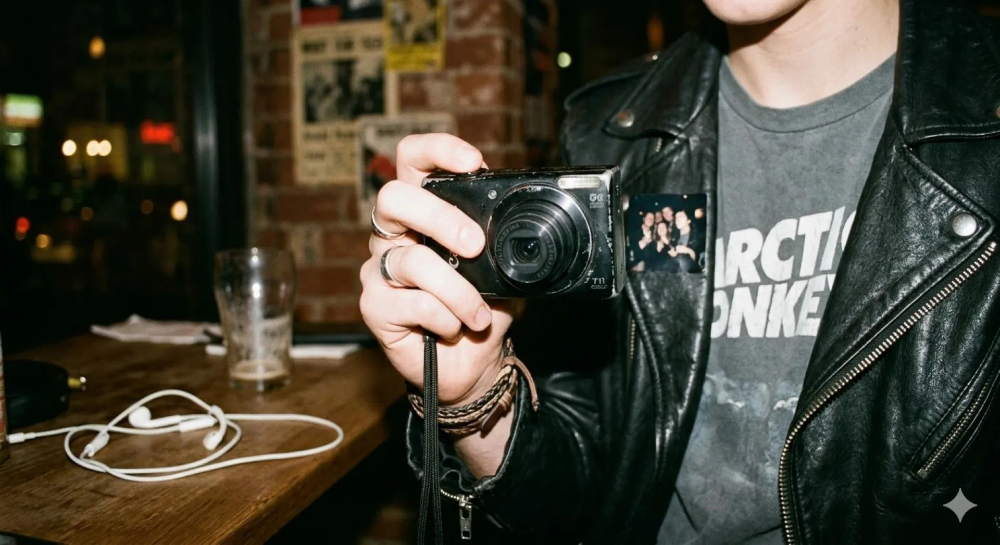
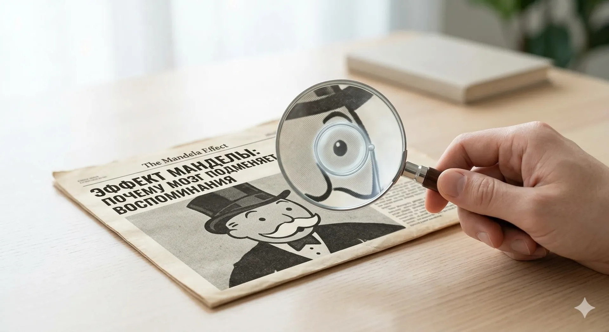
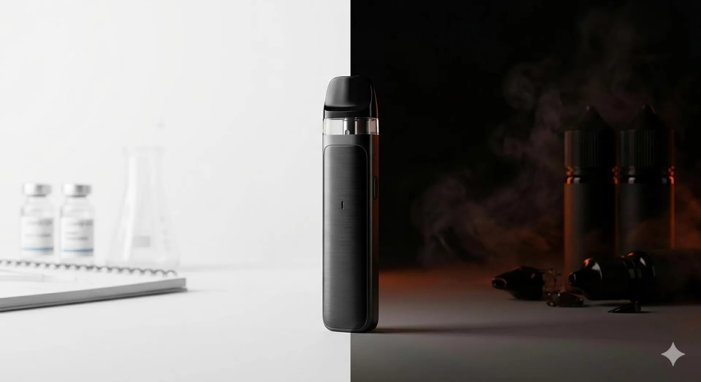
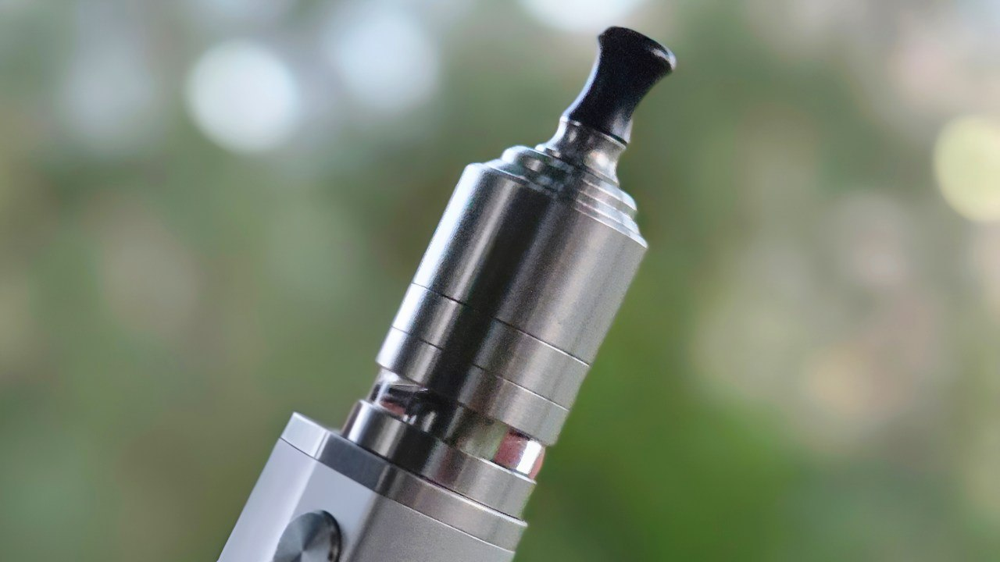
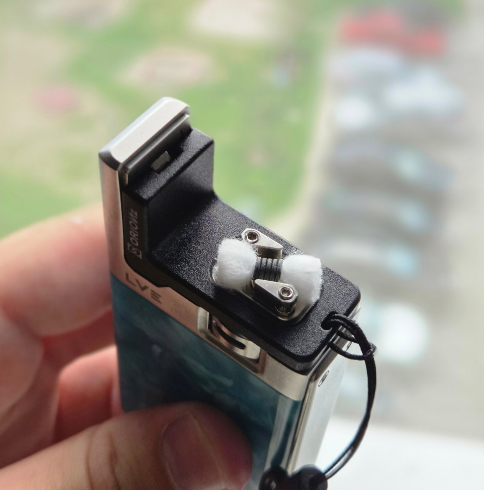

Александр Понявин Автор, контент-редактор и копирайтер
Готовлю аналитические лонгриды, журналистские материалы с глубоким фактчекингом, экспертные обзоры техники и посты для профильных комьюнити. Пишу чистым языком без воды, разбираюсь в сложных темах и сдаю тексты точно в срок. Студент 4 курса журналистики АлтГУ.
Публикации в СМИ («Катунь 24»)
Авторские аналитические материалы: исследования рынков, цифровая культура, научпоп и разбор мифов

Как подписки незаметно стали новой строкой расходов
Исследование подписочной модели в РФ: трансформация потребления, «усталость от подписок», экосистемная привязка клиентов и темные паттерны удержания.
Эпоха голосовых и кружочков: как мессенджеры меняют правила общения
Трансформация онлайн-этикета: прослушивание войсов на скорости х2, феномен видеокружков, баланс личных границ и нормы деловой переписки.

Верните мой 2012-й: почему эстетика ранних соцсетей снова в моде
Феномен возвращения эстетики 2010-х: мыльницы со вспышкой, инди-рок, усталость от алгоритмического глянца и поиск искренности в интернете.

Эффект Манделы: почему мозг подменяет наши воспоминания
Популярный разбор когнитивных искажений памяти: почему мозг работает как «конструктор», откуда берутся коллективные иллюзии и мифы в поп-культуре.

Вейпинг в России: что в этой теме правда, а что страшилки
Большой объективный разбор темы без кликбейта и морализаторства: реальные причины вспышки EVALI в США, химия состава жидкостей, специфика солевого никотина, дефицит долгосрочных клинических исследований и проблема серого рынка в РФ.
Обзоры девайсов (PrimeVapor Review)
Ведение профильного канала: детальный технический разбор устройств, конструктива баков, эргономики и вкусопередачи

Тест-драйв устройства: конструктив и эксплуатация #3
Глубокий разбор эргономики, качества сборки, вкусопередачи, нюансов обслуживания и честный вердикт для конечных пользователей.

Тест-драйв устройства: автономность и затяжка #2
Оценка реальной автономности аккумулятора, работы регулировки обдува, сценариев ежедневного использования и сравнение с конкурентами.

Технический разбор: комплектация и опыт #1
Детальный взгляд на комплектацию, конструктив испарительной базы и картриджей, технические характеристики и поведение при длительном тесте.
Канал @PrimeVapor_Review
Авторская площадка с честными обзорами железа, разбором новинок индустрии, ответами на вопросы и живым общением с профильной аудиторией.
Компетенции и формат работы
Сочетаю академическую журналистскую базу с практическим пониманием digital-форматов и нишевых продуктов
Тексты & Редактура
- Аналитические лонгриды, статьи и спецпроекты
- Глубокий фактчекинг и работа с первоисточниками
- Четкая структура, инфостиль без воды и штампов
- Быстрая адаптация под редполитику и Tone of Voice
Нишевый и Tech-контент
- Детальные обзоры девайсов, железа и электроники
- Развитие и контент-планирование Telegram-каналов
- Понимание болей, сленга и запросов аудитории
- Перевод сложных технических характеристик на живой язык
Условия сотрудничества
- 100% удаленный асинхронный формат работы
- Железное соблюдение согласованных дедлайнов
- Проектная оплата за статьи / фикс за ведение канала
- Открыт к небольшому профильному тестовому заданию
Бриф и задача
Фиксируем цель текста, целевую аудиторию, формат площадки, объем и точный дедлайн.
Ресерч и фактура
Собираю статистику, исследования и комментарии, проверяю факты и формирую логический скелет статьи.
Написание и верстка
Пишу плотный текст с подзаголовками, лидом и выводами, вычищаю канцелярит и словесный мусор.
Сдача в срок
Передаю готовый к публикации материал, при необходимости оперативно вношу финальные правки редактора.